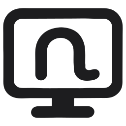

Linux
A desktop with a browser, terminal and file manager, or a lightweight shell for code and services. No Docker needed.

Noodle Computer
Linux, Mac and Windows computers that run privately on your Mac. Use them yourself, give them to agents in Noodle, or connect Claude Code, Codex and any MCP client.
Free and open source. Needs an Apple silicon Mac with macOS 26 or later.

Each computer has its own disk, terminal and desktop, apart from your files and your apps.
Files and installed software stay with the computer across restarts and upgrades.
Open any computer to see what your agent has been doing, or to take over.
Pick the system the job needs. Each one gets a desktop, a terminal and a file browser in the same window.
A desktop with a browser, terminal and file manager, or a lightweight shell for code and services. No Docker needed.
A separate macOS account on this Mac, signed in in the background with its own desktop and files.
Windows 11 for Arm, downloaded from Microsoft and set up for you. Terminal opens PowerShell. Needs macOS 27.
Noodle Computer comes with a command-line tool and an MCP server. Add it to Claude Code or Codex with one line, and your agent can create computers, run commands and move files.
 Claude Code
Claude Code Codex
Codex$ claude mcp add noodle-computer -- noodle-computer mcp Added stdio MCP server noodle-computer $ noodle-computer list Build box Linux Shell running Office Windows 11 stopped $ noodle-computer upload --computer "Build box" \ --source report.csv --destination /workspace/report.csv $ noodle-computer open --computer "Build box" { "terminal": "t1" } $ noodle-computer write --terminal t1 --text "make test"
It can create computers and use the ones you lend it.
Outside access is off until you turn it on, and Noodle Computer asks before any app connects.
Add a computer to a bot in Noodle and it starts when the bot needs it. The window can stay closed while the work goes on.
Give the same computer to several agents working on the same files. Each gets its own terminal.
An agent can show you its terminal or desktop in the conversation. Click it to open that computer.
Sign in to a website in the desktop's browser, and agents can work in those pages from then on.
Drag files and folders between Finder and a computer, preview them with Space, and search, rename and move them in Files.
Large imports and exports show their progress and can be cancelled.
Give each computer a name, an icon, a background and terminal colours.
Fetch the latest image while keeping your files and installed software.
Linux and Windows computers each run in their own virtual machine. They cannot see your folders or your clipboard, and nothing crosses over unless you or an agent copies it.
No cloud machines and no account. Your computers are stored on your disk.
Host folders and the clipboard stay out of reach.
Turn off networking for a Shell computer.
Every line of code is public under the Apache 2.0 licence.
Use it on its own, from your favourite agent, or with Noodle.